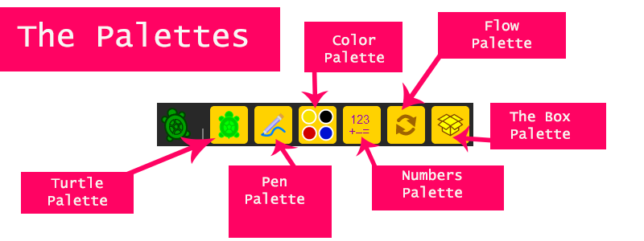

Tutorial 2: Palettes
In this tutorial are shown the palettes, why they are so important and how you are going to used them.
The Palettes are the most important thing in the toolbar, because inside of the palettes are the blocks, the main reason why Turtle Art works, the main reason why you are able to draw in the canvas.

Inside the Palette menu, there are six different palettes, each one with different blocks for different functions. The six palettes are: the turtle palette or basic palette, the pen palette, the color palette, the numbers palette, the flow palette and the blocks palette. Each one with different uses.

The Turtle palette or Basic palette: Is the palette that contains all the basic functions of the turtle such as its movements, headings and values.

The Pen palette: With the options from this palette you can set in different ways the stroke of the pen.

The Color palette: This palette enables you to change to color of the stroke of the pen as you like.

The Numbers palette: This palettes contains math operators.

The Flow palette: Inside this palette are flows instructions like in a programming language they can make loops or conditional sentences such as if sentences and while, until or for loops.

The Blocks palette: The blocks inside this palette allows you to show text within your drawing.

Using the blocks
To use to blocks is very simple, you just have click on the block to drag the one that you want and place it in the canvas.
Just move blocks as a drag and drop items.
Erasing blocks
To erase blocks that you place on the canvas, just drag them to any of the Palettes and then just click to drop them.
Joining blocks
To join blocks, only drag the block that you want near the other block depending on which is the block and how does do.
Examples:
Joining block values
Joining action blocks
Turtle Palette... continue on tutorial 3